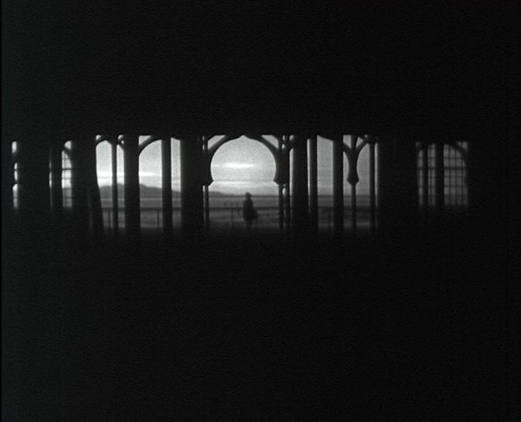

Carnival of Souls, frame at 1:17:08
Herk Harvey · 1962 · Film, black and white (frame)
Free to use
Harvey shot the film in three weeks in Lawrence and Salt Lake City, during three weeks off from his job. He raised $17,000 in cash by asking local businessmen to invest $500 each and deferred the other $13,000. The car that goes off the bridge at the start was filmed in Lecompton, Kansas, which asked only that the crew replace the broken rails; the repair cost $12. It was the only feature film he made.
Open in The ArtchiveFull-size file ↗